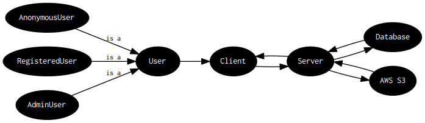
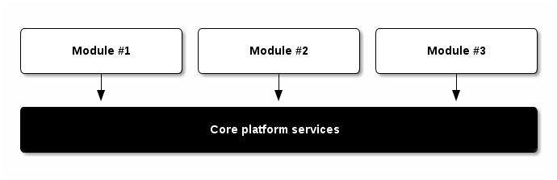
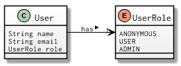

Document title
| Author | Sergio-Feliciano Mendoza-Barrera |
| (sergio@bizland.biz) | |
| Date | 2017-06-16 09:14:38 |
Table of Contents
1 Introduction
1.1 TODO Abstract
This document is a demonstration of the thi.ng/org-spec template, primarily intended to simplify the creation & maintenance of technical specifications written in Org-mode.
All diagrams in this document are autogenerated from embedded code
block snippets in the original .org file. See Appendix B for more
information.
Brief outline description of the document1…
1.2 DONE Scope
Topics covered by this specification:
- System architecture - design guidelines, data models, roles & responsibilities
- Client / server communication - protocols and implementation details between system modules
1.3 Status of This Document
May Be Superseded
This section describes the status of this document at the time of its publication. Other documents may supersede this document.
Changes since the last version
- no changes
1.4 Conventions
The key words MUST, MUST NOT, REQUIRED, SHOULD, SHOULD NOT, RECOMMENDED, MAY, and OPTIONAL in this specification are to be interpreted as described in RFC2119.
Since a document and project of this nature deals with a large number of technologies, each with their own set of acronyms, please refer to the glossary in Appendix A, which briefly explains some of them.
1.4.1 Definition of project specific terms
In this document:
- Term A
- is a…
- Term B
- is a…
2 System architecture
VERSION: 1.0
Example of generating a GraphViz visualization:

2.1 System actors, roles & responsibilities
2.1.1 Users
2.1.2 Client
2.1.3 Server
2.2 General system design guidelines
2.2.1 User experience
2.2.2 Accessibility
2.2.3 Data formats
2.2.4 Performance
2.2.5 Security
2.2.6 Layered architecture
Example of generating block diagrams from ASCII art using ditaa:

Figure 2: Top-level, schematic overview of layered client architecture
2.3 Client data model
2.3.1 Overview
Example of generating UML diagrams from textual descriptions using plantuml:

Figure 3: Schematic overview of client side data entities
In the following sections each data field is expressed with type information, in Java style pseudo-code form.
2.3.2 User
| Field | Required | Description |
|---|---|---|
name |
N | User name |
email |
N | User email |
role |
Y | One of possible values defined by UserRole |
Example PlantUML diagram snippet defining the User class in above
diagram. The full diagram itself is defined in the file
/sections/diagrams.org, which is not exported to HTML.
class User {
String name
String email
UserRole role
}
2.3.2.1 User roles
| Value | Description |
|---|---|
ANONYMOUS |
any non-logged in user |
USER |
logged in, registered user with default permissions |
ADMIN |
logged in, registered user with admin permissions |
enum UserRole {
ANONYMOUS
USER
ADMIN
}
2.4 Technologies used
This section lists the currently envisaged set of technologies used to implement the system. Links & further explanations of the various projects are provided in Appendix A.
- ClojureScript
- Modern dialect of Lisp, compiled to optimized JavaScript
3 Client / server communication
3.1 Server API requirements
3.1.1 Security considerations
3.1.2 HTTP requests
The following table summarizes standard HTTP REST requests (as per RFC7231):
| HTTP Verb | Client intention | HTTP Status | HTTP Status |
|---|---|---|---|
| (successful) | (error) | ||
| POST | create a new resource | 201 & redirect | 400 / 403 / 404 |
| PUT | update an existing resource | 200 / 204 | 400 / 403 / 404 / 409 |
| GET | read an existing resource | 200 | 400 / 403 / 404 |
| DELETE | delete an existing resource | 200 / 204 | 400 / 403 / 404 / 409 |
3.2 Server routes
3.2.1 POST /users/login
| Param | Required | Description |
|---|---|---|
email |
Y | User's registered email address |
pass |
Y | User password |
Requires authentication: NO
Description: Attempts to authenticate user based on given credentials.
Returns:
| Success | Error |
|---|---|
{"status": "ok"}
|
{"status": "error"}
|
3.3 Clientside SPA routes
3.3.1 Route: /login
- Displays login dialog
- HTTP POST credentials to server
/loginroute - Redirects to SPA main page
3.3.2 Route: /media/:media_id
| Param | Type | Description |
|---|---|---|
media_id |
UUID | Media asset ID |
- Retrieves media asset from server
- Displays media asset
4 Appendix A - Glossary informative
- AWS
- Amazon Web Services, cloud service provider. http://aws.amazon.com/
- ClojureScript
- A modern dialect of Lisp compiling to optimized JavaScript using Google Closure compiler. https://github.com/clojure/clojurescript
- CRUD
- Create, Read, Update, Delete - usually refers to adminstration tasks in CMS / database applications
- EDN
- Extensible Data Notation, lightweight, data exchange format similar to JSON, but with extensible type support. Native serialization format for Clojure / ClojureScript. https://github.com/edn-format/edn
- Google Closure compiler
- Currently best optimizing JavaScript to JavaScript compiler. Performs static analysis and whole program optimizations to allow efficient deployment of large-scale applications. Supports dynamic module loading. https://github.com/google/closure-compiler
- Google Closure library
- Google's standard library for cross-browser JavaScript application development. All encompassing & optimized for Closure compiler. https://github.com/google/closure-library
- JSON
- JavaScript Object Notation, lightweight defacto industry standard data exchange format, especially if parts of a system involve JavaScript. http://json.org/
- SPA
- Single-page Application. Refers to a client-side JavaScript web application model, usually with different UI modules. All essential assets (HTML, JS, CSS) are loaded only once and lead to more fluid user experience. Examples: GMail, Google Docs etc.
- Swagger
- Industry defacto standard documentation system for REST API endpoints. http://swagger.io/
- UUID
- Universally unique identifier, standardized a 128bit value, usually expressed as 32 hex characters. https://en.wikipedia.org/wiki/UUID
5 Appendix B - Building this document informative
This document (including all diagrams) has been generated using the following tools:
5.1 Re-publish an HTML version
The entire source code for this document is stored in the file
index.org. Please follow these steps to publish an updated HTML
version of the specification:
- Install the above listed tools. On OSX Ditaa, GraphViz and PlantUML can be installed via Homebrew:
brew update && brew install ditaa graphviz plantuml
- In Emacs type
M-x load-file RET /path/to/org-theme/config.el - Open the
index.orgfile in Emacs - Press
C-c C-e h oto launch the export selection dialog, export as HTML and automatically open the file in your web browser
Note: The export process will re-generate the changelog (only in the exported HTML), re-create any diagrams and replace any existing rendered diagram files.
5.2 Re-publish PDF
Follow the same instructions as for HTML and then print the document
to a PDF file via your browser's print dialog. Print style sheets are
included in the file css/styles.css.